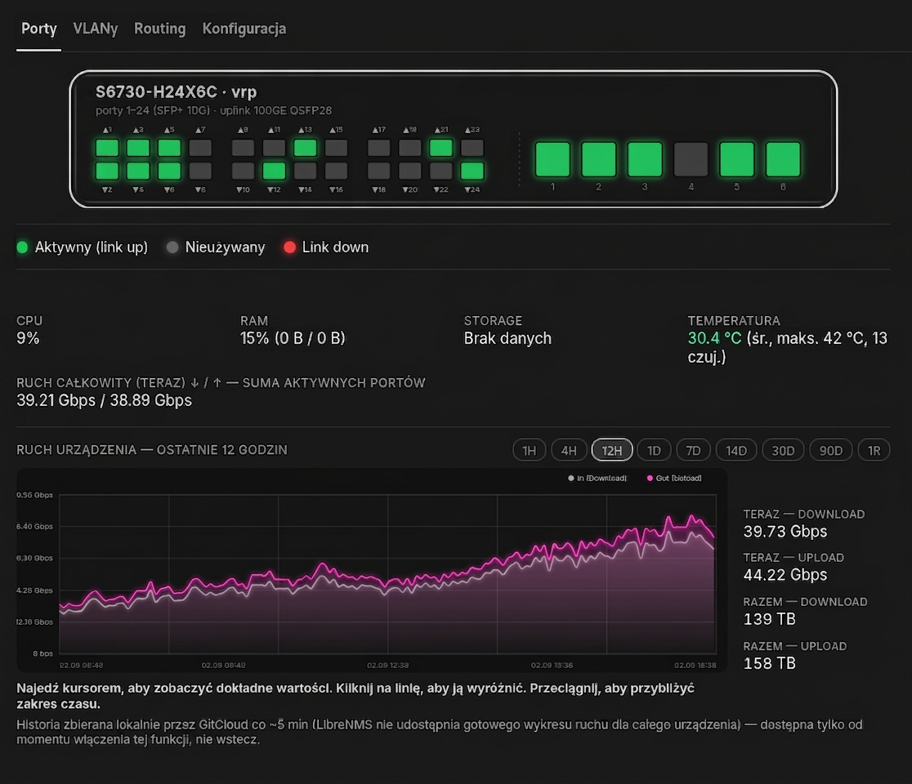

Cała sieć, jedna prawda, jeden panel.
GitCloud to system operacyjny sieci dostawcy internetu — monitoring, automatyzacja i bezpieczeństwo infrastruktury zebrane w jedno miejsce, zamiast dziesięciu osobnych narzędzi.
- Wykrywaj awarie sieci, zanim zauważy je klient
- Automatyzuj to, co powtarzalne — backupy, alerty, synchronizacje
- Zarządzaj dostępem przez własny urząd certyfikacji SSH
Tak wygląda konsola GitCloud
Cztery widoki tej samej platformy — sieć, alerty, mapa i zasoby. Dane poniżej są demonstracyjne.

| Nazwa | ID | Typ | Lokalizacja | vCPU | RAM | Status |
|---|---|---|---|---|---|---|
| edge-gateway-01 | #101 | VM | Region A | 4 (2%) | 2.1 / 4 GB | Uruchomiona |
| monitoring-core | #104 | VM | Region B | 6 (12%) | 5.8 / 10 GB | Uruchomiona |
| db-primary | #129 | LXC | Region B | 2 (1%) | 0.6 / 4 GB | Uruchomiona |
| backup-collector | #155 | LXC | Region A | 2 (3%) | 1.1 / 2 GB | Uruchomiona |
| legacy-radius | #108 | VM | Region A | 4 (0.4%) | 0.9 / 2 GB | Niedostępny |
| vpn-gateway | #122 | VM | Region C | 4 (3.6%) | 3.1 / 4 GB | Uruchomiona |
Podgląd interfejsu GitCloud — wszystkie dane na tej stronie są demonstracyjne.
Dlaczego GitCloud istnieje
Dane najpierw do własnej bazy
To zasada, nie tylko slajd: każda funkcja pokazująca dane opiera się najpierw na własnej, regularnie synchronizowanej bazie — dopiero potem, jeśli naprawdę trzeba, na zapytaniu do zewnętrznego systemu.
Efekt: mniej zależności od dostępności zewnętrznych systemów i dane dostępne nawet wtedy, gdy źródłowy system akurat nie odpowiada.
AI, który zna sprzęt, a nie tylko czyta logi
Analiza alertów z realnymi komendami CLI w kontekście
Większość asystentów AI do monitoringu potrafi opisać alert ludzkim językiem — i na tym kończy pomoc. GitCloud idzie krok dalej: model dostaje w kontekście konkretne komendy CLI dla konkretnego modelu urządzenia (OLT), które faktycznie trzeba wykonać, żeby zdiagnozować problem — nie ogólnikowe „sprawdź połączenie", tylko gotową komendę do wklejenia w terminal.
Mapa sieci obok pokazuje ten sam mechanizm z innej strony: każdy węzeł to żywe połączenie z bazą GitCloud — gdy pada jedno łącze szkieletowe, widać natychmiast, które lokalizacje straciły łączność, zamiast składać to ręcznie z osobnych zgłoszeń.
Dostęp bez stałych haseł i wiecznych kluczy
Własny urząd certyfikacji SSH
Zamiast rozsianych po serwerach statycznych kluczy, GitCloud wydaje krótkotrwałe certyfikaty SSH — ważne 12 godzin, automatycznie odnawiane. Skradziony certyfikat traci ważność sam, bez ręcznego odwoływania dostępu na każdej maszynie z osobna.
Status zaufania każdego hosta jest widoczny na bieżąco — skonfigurowano czy realnie zweryfikowano żywym logowaniem, nie tylko deklaracją.
Kopia zapasowa, której można zaufać
Weryfikacja, nie tylko wykonanie
Wykonanie kopii zapasowej to dopiero połowa pracy — GitCloud sprawdza integralność każdej kopii, zanim uzna ją za bezpieczną. Archiwa trafiają zaszyfrowane, a status weryfikacji jest widoczny obok każdego zadania backupu.
Ten sam mechanizm pilnuje ciszy w logach — jeśli źródło przestaje wysyłać nowe wpisy, system wie o tym, zanim ktoś zauważy braki ręcznie.
GitCloud sprawia, że utrzymanie sieci przestaje być gaszeniem pożarów
Niestandardowe alerty i jeden panel danych pozwalają wychwycić wąskie gardła, zanim staną się awarią.
Dlaczego zespół sieciowy potrzebuje GitCloud
Zamiast reagować na awarie, GitCloud daje narzędzia, by je wyprzedzać.
Monitoring proaktywny
Śledzenie stanu sieci w czasie rzeczywistym, zanim problem dotknie użytkowników.
Alerty z logów, nie tylko z metryk
Własne sygnatury wychwytują wzorce w logach na żywo — złapały realny dwudniowy crashloop usługi, który przeszedł niezauważony przez standardowy monitoring.
Progi zapełnienia zasobów
Monitoring pul adresów IP z automatycznym oznaczaniem krytyczności — przy wdrożeniu od razu wykrył 2 regiony na granicy wyczerpania.
Grupowanie duplikatów przez LLM
Podobne alerty łączą się automatycznie zamiast zalewać zespół powtórkami — model dobrany po realnym teście jakości, nie na pierwszy rzut oka.
Co widać z konsoli GitCloud
Monitoring sieci
Stan urządzeń, VLAN-ów, łączy i pul IP — jeden widok zamiast osobnych narzędzi dla każdej warstwy sieci.
SNMP · SSH · własna bazaAutomatyzacja
Powtarzalne zadania operacyjne — synchronizacje, kopie zapasowe, alerty — działają same, na harmonogramie.
Cronicle · skrypty · alertyDostęp i certyfikaty
Własny urząd certyfikacji SSH i krótkotrwałe certyfikaty zamiast statycznych kluczy rozsianych po serwerach.
SSH CA · rotacja 12hRejestr zasobów
Serwery, maszyny wirtualne, kontenery i urządzenia sieciowe — pełen inwentarz z historią zmian.
Proxmox · Docker · SNMPKopie zapasowe
Weryfikacja, nie tylko wykonanie — każda kopia jest sprawdzana, zanim uzna się ją za bezpieczną.
Szyfrowanie GPG · weryfikacjaAlerty i zgodność
Alerty trafiają tam, gdzie pracuje zespół, a każde AI-generowane wiadomości do klientów czekają na akceptację człowieka przed wysyłką.
Mattermost · RODOKto prowadzi GitCloud
Buduję i utrzymuję GitCloud — wewnętrzny system operacyjny sieci, który powstał z realnej potrzeby: zbyt wiele narzędzi, zbyt mało jednego miejsca prawdy. Codzienna praca to sieć, automatyzacja i infrastruktura — GitCloud jest miejscem, w którym to wszystko się spotyka.
Nie piszę tego z zespołem marketingu za plecami — kod, który tu widać opisany, sam wdrażam i sam naprawiam, gdy coś w nocy przestaje działać.
Najczęstsze pytania o GitCloud
Czym właściwie jest GitCloud?
Czy GitCloud jest dostępny jako produkt komercyjny?
Jak działa dostęp SSH bez stałych kluczy?
Skąd pochodzą dane pokazywane w monitoringu?
Jak wygląda zgodność z RODO?
Gotowy porozmawiać o sieci?
Pytania o GitCloud, współpracę albo chęć porównania notatek o utrzymaniu sieci ISP — napisz bezpośrednio.
- Odpowiadam osobiście, zwykle w ciągu 1-2 dni
- Bez formularzy i pośredników — piszesz wprost na maila
- Otwarty na projekty związane z siecią i automatyzacją